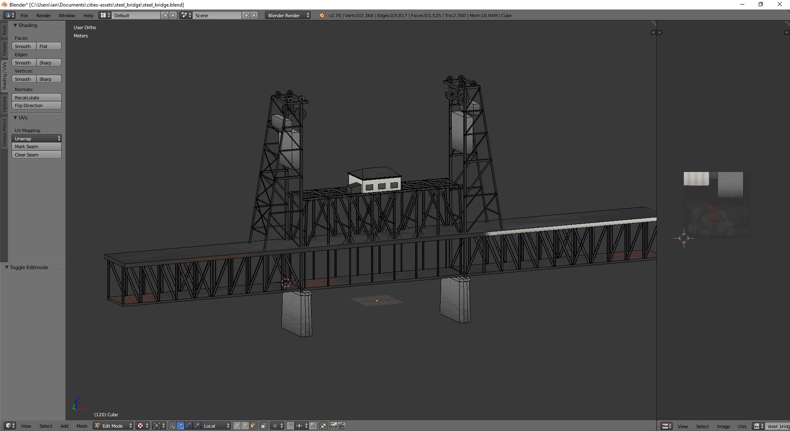

Aug 7 2016
 For whatever reason I haven't been feeling the itch to code anything in my spare time lately, maybe because it's my job. When I do, my Museamp project fulfills that need but lately I've been modeling assets for Cities: Skylines using Blender. I used to hate Blender's interface, being used to Maya and to a lesser extent 3DS Max, but now that I've spent some time with it (and have spent several years having not used Maya), it's workable. Interfaces for 3d modeling software really have never solved the problem entirely and I think there's a lot of room for improvement still.
For whatever reason I haven't been feeling the itch to code anything in my spare time lately, maybe because it's my job. When I do, my Museamp project fulfills that need but lately I've been modeling assets for Cities: Skylines using Blender. I used to hate Blender's interface, being used to Maya and to a lesser extent 3DS Max, but now that I've spent some time with it (and have spent several years having not used Maya), it's workable. Interfaces for 3d modeling software really have never solved the problem entirely and I think there's a lot of room for improvement still.
A couple months ago I released my first asset, a factory hall modeled after the Alcoa plant in Lafayette, IN. It was the first time I've ever publicly released a mod on Steam and it ended up being pretty popular, which was cool. I'm not generally the sort of person who seeks validation from others, but it's always nice to know that other people can appreciate the things you do for fun.
Right now I'm working on a few other assets - a large distribution center / warehouse and a replica of Portland's Steel Bridge, which is a really neat vertical-lift bridge that would look great in an industrial setting.
